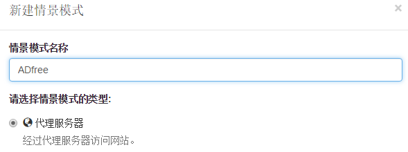
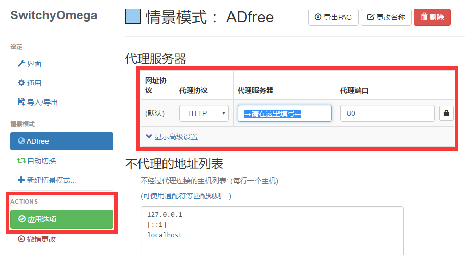
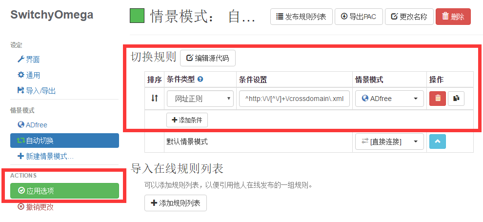

ADfree Player Online 支持与帮助
感谢
OpenGG / Harv.c/Cinhoo / 15536900 / yndoc / catcat520 / jc3213 / rasso1 / HalfLife / jiayiming / dszw312492869 等提供的源代码和播放器！
常见问题及解决方法
- 务必打开 chrome://settings/content ，将 Flash 设置为“允许网站运行Flash”
- 如果扩展出现Stop字样，说明扩展遇到了权限问题，请看“扩展冲突”部分，或者重新安装ADfree
- 其他问题请点击“更新规则”
已知问题：
- 爱奇艺：可以使用 iqiyi-player-switch，强制将播放器设置为Flash
- 优酷：无法保存优酷的观看记录；无法处理版权视频，所以部分视频会有广告
注意：
- 配合ADP/ADB/uBlock等同类扩展一起使用，效果更佳！推荐规则
- 屏蔽广告将无法显示弹幕
- 反馈时务必附带链接地址，浏览器版本，扩展版本等信息！
扩展冲突：
如果您希望与 Proxy SwitchyOmega 扩展同时使用，请取消勾选“代理控制”按钮，并且按照以下方法设置代理；否则请停用 ADfree Player Online 或者 Proxy SwitchyOmega
-
新建情景模式-情景模式名称：ADfree，情景模式的类型为“代理服务器”；

-
代理协议为：HTTP；代服务器为：aclog3.huomaotv.cn；代理端口：80。

-
自动切换-切换规则-增加条件：
条件类型为：“网址正则”；条件设置为：^http://[^/]+/crossdomain\.xml；情景模式选择：ADfree。

按钮说明：
- 代理控制：勾选时扩展将拥有必要的代理权限，默认勾选
- 清理缓存：勾选时扩展会自动清理相关缓存，默认勾选
- 更新规则：手动更新规则（扩展会自动更新规则）
- 手动初始化：重置扩展的内部设置